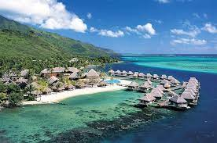
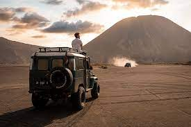

1. Bali adalah sebuah provinsi di Indonesia yang beribukota di Denpasar. Provinsi Bali terletak di bagian barat Kepulauan Nusa Tenggara. Apa saja ciri khas daerah bali? Jadi, ciri khas bentuk kebudayaan Bali adalah Keris, Gamelan Bali, Tari Pendet dan Tari Kecak, Upacara Ngaben, Hari Raya Nyepi, Pakaian khas Bali, Bahasa Bali dan sebagainya.

2. Kepulauan Raja Ampat merupakan rangkaian empat gugusan pulau yang berdekatan dan berlokasi di barat bagian Kepala Burung Pulau Papua. Secara administrasi, gugusan ini berada di bawah Kabupaten Raja Ampat, Provinsi Papua Barat. Raja Ampat terkenal dengan apa? Kepulauan yang berada di ujung barat laut pulau Papua ini memang sudah dikenal luas sebagai 'tambang emas' bagi para penggila petualangan.
3. Pulau Lombok adalah sebuah pulau di kepulauan Sunda Kecil atau Nusa Tenggara yang terpisahkan oleh Selat Lombok dari Bali di sebelah barat dan Selat Alas di sebelah timur dari Sumbawa. Pulau ini kurang lebih berbentuk bulat dengan semacam "ekor" di sisi barat daya yang panjangnya kurang lebih 70 km. Pulau Lombok, Nusa Tenggara Barat merupakan salah satu pulau yang memiliki ragam wisata terkhusus dengan kekayaan alamnya yang mengagumkan, mulai dari wisata ekstrim seperti wisata Gunung Rinjani, hingga wisata halal yang terkenal religi seperti wisata masjid Islamic Center.
4. Gunung Bromo atau dalam bahasa Tengger dieja "Brama", juga disebut Kaldera Tengger, adalah sebuah gunung berapi aktif di Jawa Timur, Indonesia. Gunung ini memiliki ketinggian 2.329 meter di atas permukaan laut dan berada dalam empat wilayah kabupaten, yakni Kabupaten Probolinggo, Kabupaten Pasuruan, Kabupaten Lumajang, dan Kabupaten Malang. Gunung Bromo terkenal sebagai objek wisata utama di Jawa Timur.

5. Candi Borobudur adalah sebuah candi Buddha yang terletak di Borobudur, Magelang, Jawa Tengah, Indonesia. Candi ini terletak kurang lebih 100 km di sebelah barat daya Semarang, 86 km di sebelah barat Surakarta, dan 40 km di sebelah barat laut Yogyakarta. Keunikan Candi Borobudur lainnya adalah relief candi. Berdasarkan informasi dari situs Balai Konservasi Borobudur, candi ini mempunyai 1.460 panil relief dan relief hias atau dekorasi sebanyak 1.212 panil. Relief tersebut berada tingkatan Kamadhatu dan Rapadhatu.